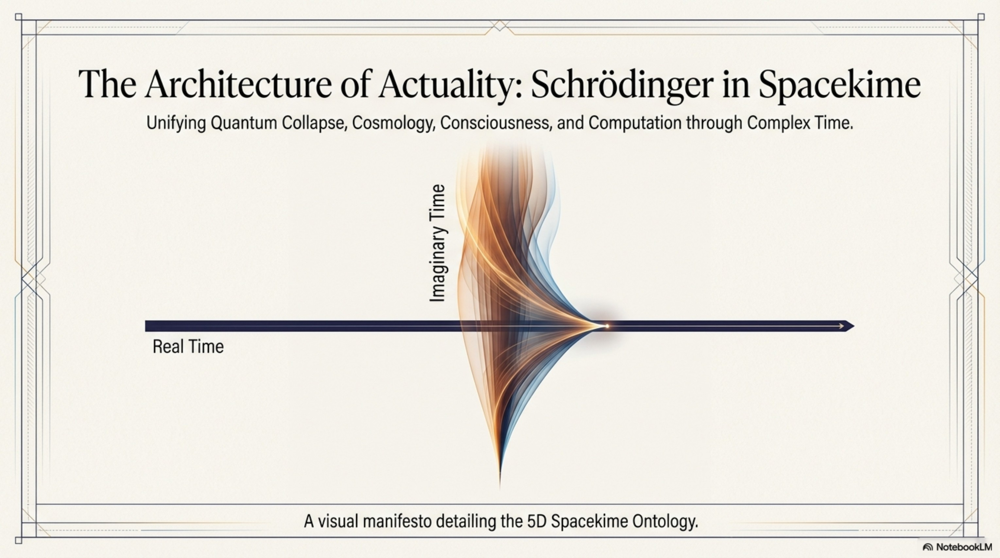

Video
The Spacekime Framework
Video overview of spacekime framework.
Research Hub
We propose a new framework for understanding quantum physics, consciousness, and theology: space and complex time (spacekime).
Quantum phenomena reveal a surprising fact: reality consists not just of solid, unchangeable matter but dynamic possibilities. Our work is motivated by the insight that the spacetime model of modern physics is incomplete, lacking an ontological category for the immaterial constraint structure underlying quantum possibilities. Extending the fundamental equations of quantum mechanics to complex time reveals the universe as an open quantum system with changeable constraints governing events in spacetime. This resolves longstanding paradoxes in physics and opens new avenues for understanding consciousness and theology.


Spacekime Overview
Graphical presentation summarizing the new category of imaginary-time constraints and implications for physics, consciousness, and theology.

Media Library
Video and audio summaries explain the central concepts and implications of the spacekime framework in an accessible format.
Video
Video overview of spacekime framework.
Video
Video summary of spacekime implications
Audio
Podcast episode describing implications of spacekime for physics, mind/brain interaction, and theology.
Spacekime Papers
The following papers describe the spacekime framework and its implications for physics, consciousness, and theology.
Paper
Godel's incompleteness theorems,undecidability, and quantum no-go theorems all point to real phenomena that cannot be fully captured by classical spacetime, motivating the need for a real, dynamical, constraint structure that is nonetheless immaterial and atemporal. We argue that imaginary time provides a natural mathematical description of such constraints.
Paper
The Schrodinger equation can be naturally extended by making time a complex number, with separate evolution rules for real and imaginary time. This extension yields an open quantum system with an imaginary-time "reality dial" that constrains real-time evolution. The complex-time Schrodinger equation has profound implications for physics, including quantum gravitational effects and the dark sector.
Paper
The relationship between measurement and wavefunction collapse is one of the most mysterious aspects of quantum mechanics. Using the Schrodinger bridge formalism described in our complex-time Schrodinger framework, we show that the quantum measurement process contains a previously uncharacterized geometric object we call the collapsehedron. Our result underscores the primacy of immaterial constraints in wavefunction collapse.
Paper
We propose a novel theory of interactionist dualism in which minds can influence events in spacetime without violating energy conservation by changing imaginary-time constraints. Conscious experiences (qualia) arise from the contrast among open possibilities. Agency can be quantified in terms of the extent of coordinated possibilities it controls--its total possibility domain. Brains are unique among physical objects in their ability to sustain large total possibility domains. The imaginary-time constraint structure of a mind persists after death, providing ontological foundations for postmortem consciousness and resurrection.
Paper
The new category of imaginary-time constraints provides new language for expressing theological concepts related to creation, sin, and renewal.